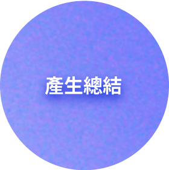
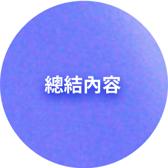
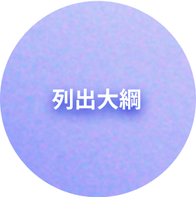
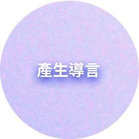
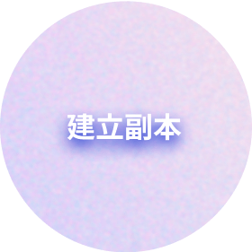

專案背景
文章管理系統中，從前期的建立、編輯、發布文章，中期的會員服務、權限管理，到後期的訂閱服務、廣告投放，打造全方位內容產品的SaaS服務，並持續迭代。以現有服務為基礎，導入新品牌形象進行介面 Redesign。
資訊架構
設計限制與挑戰
- 相對於一般形象、活動、購物網站，文章管理系統可適用的參考範例較少。
- 相比一般網站，UI Guideline 的規模複雜度更高，Redesign 的難度更大。
- 第一次接觸 SaaS 產品，挑戰性很高。
- 考量前後端技術限制，須開發可行性，並兼顧模組化、功能性、擴充性，在開發前往往都要經過來回多方大量的討論。
- 改版前沒有設計稿可以參照，需要從網站內逐頁瀏覽獲取資訊。
- 多語系介面須考量排版是否足夠容納文字內容。
設計方法
舊版系統原先僅供公司內部使用，隨著營運目標向外推向市場，開始進行品牌化經營，發展出 UI Guideline並注重UIUX設計。初期從 0開始建立設計系統，自行尋找可以被優化的部分，提出與團隊進行討論，局部區塊進行介面優化與重構，完成後，中期陸續開始加入新功能，以每期固定維護的方式增添 UI 元件庫。
視覺原則
設計系統
設計系統參考 iOS Human Interface Guidelines、Material Design、Ant Design Guidelines 規範，並結合前端框架 tailwind 利於提升開發效率，創建適用文章管理系統的 style guide。
6 大 AI 功能
- 
- 
- 
- 
- 
運用AI強大的功能幫助使用者在使用文章管理系統時更加得心應手，其中產生 hashtag 是最受好評的功能。